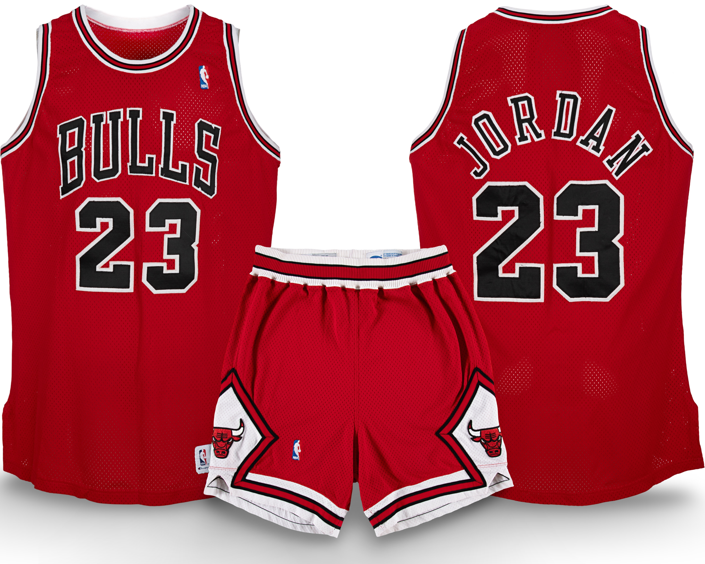

1992–93
Confirmed Population
3
Publicly Documented
1
Privately Verified
2
RESEARCH IN PROGRESS
Games Reviewed:
• Regular Season 33 of 82
• Postseason 6 of 21
Total Games Matched - 33
Last Updated: February 27, 2026
Population Summary
| Style | Confirmed | Public | Status |
|---|---|---|---|
| Home | 1 | 0 | ⏳ |
| Away | 2 | 1 | ⏳ |
Population reflects distinct season-worn garments (jerseys or full uniform sets) confirmed through archival research, documentation, and direct verification.

HOME

In game photo from 92/93.
Research in progress. No public example has surfaced.
Research & Provenance
This entry will be updated as additonal documentation becomes available in the season review process.

AWAY


Publicly documented example.
This uniform demonstrates visual continuity across six months of the regular season, preserving a complete 1992–93 Chicago Bulls road uniform.
Research & Provenance Notes
- Previously sold with photo-matching to 12 documented games.
- Through independent archival research conducted by the Michael Jordan Archive, 21 additional games were identified and confirmed.
- Total documented photo-matched games: 33.
- Photo-matched to the cover of Sports Illustrated issue 10/18/1993.
- Photo-matched to Michael Jordan's 54 point game, against the LA Lakers (MJA).
Documentation
Photo Match Details
- Authentication: Yes
- Photo-Matched: Yes
- Photo-Matched By: MeiGray, SIA, MJA
- Games Photo-Matched: 32
Documented Games
- Nov 6, 1992 — Cleveland Cavaliers
- Nov 13, 1992 — Milwaukee Bucks
- Nov 17, 1992 — Minnesota Timberwolves
- Nov 20, 1992 — Los Angeles Lakers
- Nov 22, 1992 — Phoenix Suns
- Nov 24, 1992 — Golden State Warriors
- Nov 28, 1992 — New York Knicks
- Dec 8, 1992 — Atlanta Hawks
- Dec 17, 1992 — Washington Bullets
- Dec 26, 1992 — Indiana Pacers
- Dec 29, 1992 — Charlotte Hornets
- Dec 30, 1992 — Miami Heat
- Jan 6, 1993 — Cleveland Cavaliers
- Jan 8, 1993 — Milwaukee Bucks
- Jan 9, 1993 — Philadelphia 76ers
- Jan 15, 1993 — Orlando Magic
- Jan 22, 1993 — New Jersey Nets
- Jan 23, 1993 — San Antonio Spurs
- Jan 25, 1993 — Dallas Mavericks
- Jan 30, 1993 — Houston Rockets
- Feb 3, 1993 — Denver Nuggets
- Feb 4, 1993 — Utah Jazz
- Feb 6, 1993 — Sacramento Kings
- Feb 7, 1993 — Portland Trail Blazers
- Feb 13, 1993 — Indiana Pacers
- Feb 19, 1993 — Orlando Magic
- Mar 2, 1993 — New Jersey Nets
- Mar 12, 1993 — Miami Heat
- Mar 19, 1993 — Detroit Pistons
- Mar 20, 1993 — Washington Bullets
- Mar 23, 1993 — Philadelphia 76ers